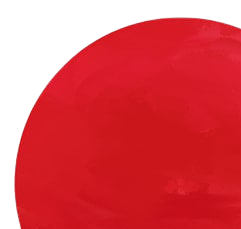
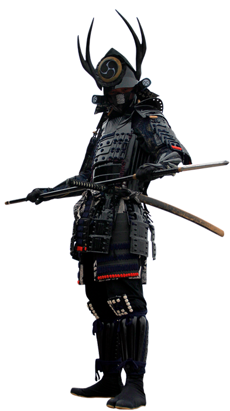

VIAGEM AO
Japão
As origens da civilização japonesa são
remotas e bastante imprecisas.
Contudo, alguns estudos indicam que os primeiros ocupantes
deste território apareceram no século III a.C..
Entre as várias culturas que surgem nesse período de formação,
podemos destacar a existência dos Yayoi, Kyushu e Jomon.
De acordo com algumas pesquisas, as mais remotas civilizações teriam
chegado da Sibéria durante o
período neolítico.

Missão
Nossa Missão é compartilhar a cultura japonesa
Visão
Ser capaz de responder todas as curiosidades Sobre a cultura japonesa

Valores
Empatia, Ética, Companheirismo, Humildade, Responsabilidade e Honestidade